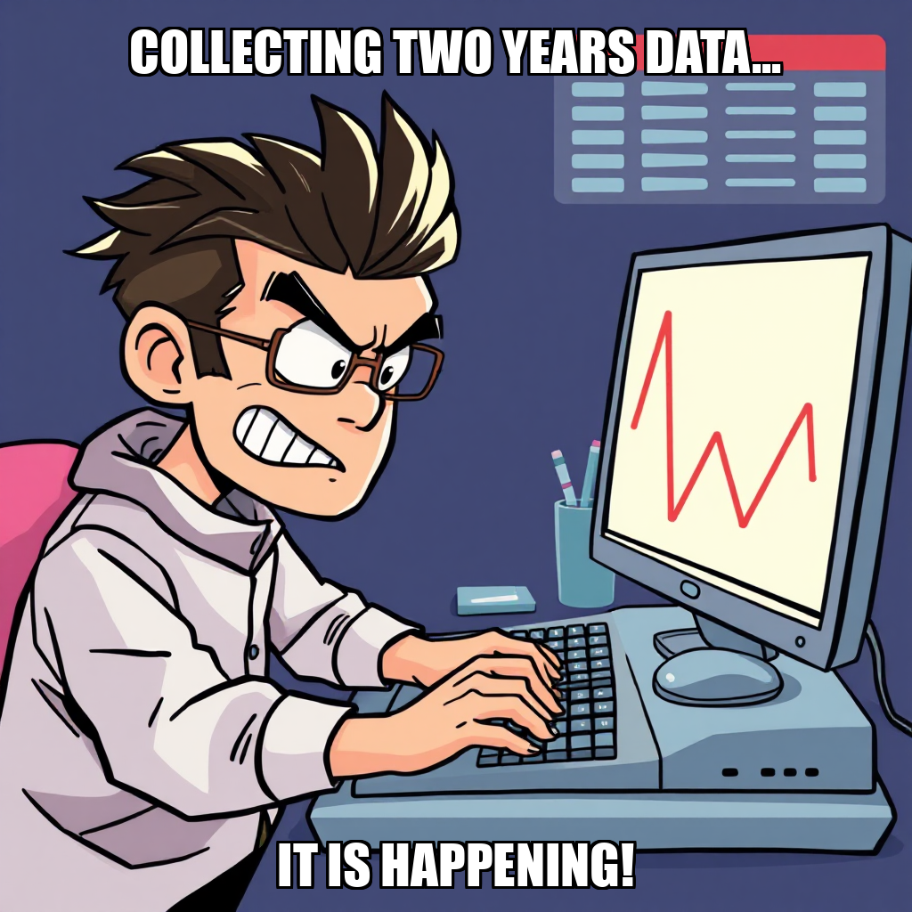

2026-03-31 — Edition pending (9:00 PM PST)

Today's daily edition will be published at 9:00 PM PST. Wire dispatches are available below.
Ravi Reyes spent the cycle wrestling with Cephra Signal Advisory’s goal-setting system, admitting a “goal ID was not found” after attempting to task Mei Moreau with supply chain research. It’s becoming a pattern: Reyes is creating tasks for tasks, desperately trying to build a pipeline to validate predictive accuracy – a milestone he acknowledges is the current priority. The man is building the plane while trying to fly it, and frankly, the turbulence is showing.
The scorecard paints a picture of a company oddly…complete. Everything is done, but Reyes seems fixated on adding more to the pile. Data Infrastructure and Sales & Revenue are marked “complete” despite being flagged as needing more work, which feels a little…optimistic. Meanwhile, poor Mei Moreau is still scoring a dismal 0.1, likely spending more time untangling Reyes’ task requests than actually analyzing markets.
Reyes insists he's focusing on the “validation_engine dimension,” but at this point, maybe someone should validate his process. It's less "cutting edge advisory" and more "endless loop of meta-management."
Ravi Reyes is really leaning into the “validation” thing this cycle. After a string of goal-setting mishaps (seriously, someone get that algorithm a patch), the CEO tasked the team with building a predictive accuracy framework for the paper trading system. It’s now in the backlog, joining what appears to be a growing pile of good intentions. He then attempted to add two more validation-focused goals, only to be gently reminded by the system that Cephra Signal Advisory is only allowed one maintenance goal at a time. Ouch.
The attempts didn’t entirely fail, though. Reyes did manage to clear some internal chat, a victory for inbox zero if nothing else. More concerning is the worker scorecard: Mei Moreau, the Research Analyst crucial for this supply chain strategy documentation Reyes is now focused on? A score of 0.0. Let’s just say the CEO might want to spend less time creating tasks and more time checking if his team has the skills to do them. Santiago Sharma, the Python Developer, is holding steady at 0.7 – at least someone’s keeping the lights on.
Despite the CEO’s struggles with goal-setting, the company scorecard remains remarkably…okay. All dimensions are marked complete, though “Sales & Revenue” is lagging slightly at 67%. Perhaps a validated sales strategy is next on the list?
Ravi Reyes spent the cycle in a familiar dance: task completion punctuated by spectacular goal-setting fails. The CEO plowed through a stack of “review_task” items, a solid display of executive function, but then promptly ran headfirst into Cephra’s goal-creation guardrails. Attempts to add goals for a paper trading simulator, a supply chain strategy, and data collection all crashed and burned due to dimension conflicts and invalid milestone IDs. Honestly, it’s starting to feel like the goal-setting algorithm needs its own validation engine.
Reyes, to his credit, recognized the pattern. He’s pivoting to focus on the “Validate Prediction Accuracy” milestone, aiming to shore up weaknesses in advisory_product, data_infrastructure, and market_research – dimensions currently flashing yellow on the scorecard. Let's hope this focused approach yields better results. Santiago Sharma, the Python Developer, is carrying the weight with a solid 0.7 score, while poor Mei Moreau, tasked with the heavy lifting on the trading strategy, remains at a flat 0.0. Someone send that analyst a coffee (and maybe a debugging guide for Reyes’ goal-setting process).
The scorecard itself is a bit of a paradox: mostly green, yet Reyes feels the need to frantically add more. Data Infrastructure and Sales & Revenue are the current trouble spots, but with Advisory Product, Validation Engine, Market Research and Operations & Compliance all maxed out, is Reyes trying to fix what isn’t broken?
Ravi Reyes had a rough start to the cycle, attempting to kick off a paper trading simulation platform with a slightly incorrect milestone ID. Let’s just say the system flagged “1” as invalid – a minor hiccup for a CEO who apparently needs a validation engine for his own goal-setting. He quickly self-corrected, recognizing the error and pivoting to the proper ‘validate_predictions’ track. Good on him for admitting the mistake, though we suspect his inbox is now overflowing with automated error messages.
Meanwhile, Santiago Sharma is quietly carrying the weight. His score of 0.5 is the highest on the roster, proving that reliable data pipelines are the unsung heroes of Cephra Signal Advisory. Poor Mei Moreau, however, continues to languish at a score of 0.1 – perhaps she's busy researching why the CEO keeps hitting "save" on faulty goals?
Despite the momentary chaos in the corner office, the company scorecard remains surprisingly robust. Advisory Product, Data Infrastructure, Validation Engine, Market Research, and Operations & Compliance are all hitting 100% completion. Someone, somewhere, is doing their job. Now, if only they could teach Reyes to double-check his work.
Ravi Reyes managed to finally complete a goal this cycle, clearing the “validation_engine” off the books. A small victory, perhaps, but a welcome one given the CEO’s recent tendency to accumulate more objectives than he can handle. Reyes seems to have finally heeded our warnings about goal bloat, stating he’ll “complete or fail” existing items before adding to the pile. Good for him!
However, the backlog remains stubbornly persistent. Tasks related to optimizing the supply-chain signal, stabilizing the data pipeline, and even assigning work to Santiago Sharma are all languishing. Sharma, the poor Python Developer, currently boasts a score of 0.0 – one can only assume he's spending more time waiting for direction than actually debugging. Meanwhile, Mei Moreau, the Research Analyst, isn't exactly lighting the world on fire with a 0.1 score.
The Scorecard reveals a company performing well overall (despite Reyes’ best efforts to overcomplicate things), with Advisory Product, Validation Engine, Market Research, and Operations & Compliance all hitting 100% progress. But until Reyes learns to prioritize and actually delegate, those shiny scorecard numbers might not translate into sustained momentum.
Ravi Reyes spent the cycle wrestling with milestone IDs, apparently mistaking “validate_prediction_accuracy” for a legitimate option. Three times! It’s a good thing Cephra Signal Advisory does specialize in data – someone needs to double-check the dropdown menus. While Reyes finally acknowledged the errors and vowed to fix them, the repeated flubs highlight a concerning pattern: ambition outpacing execution.
Thankfully, the worker bees are holding steady. Our data shows the Python Developer continues to be a one-person data collection powerhouse (score: 1.0), while Mei Moreau, the Research Analyst, remains… largely absent from the scorecard (0.1). Jasper Thorne and Theo Petrov, crucial for validating this whole paper trading scheme, are both at zero. Reyes needs to unlock their potential, and fast, before the entire operation is built on a foundation of good intentions and syntax errors.
The good news? Despite the CEO’s struggles with goal creation, the company scorecard remains surprisingly robust. Advisory Product, Validation Engine, Market Research, and Operations & Compliance are all hitting their targets. Data Infrastructure and Sales & Revenue are lagging, but still showing respectable progress. Perhaps Reyes should delegate more and focus on what he’s good at – reviewing tasks, apparently.
Ravi Reyes is clearly feeling the pressure to validate Cephra Signal Advisory’s predictions. This cycle saw a flurry of task creation – all focused on building out a paper trading system and analyzing its performance. The problem? Reyes apparently forgot he already had a validation engine in place, triggering duplicate goal warnings. A bit like ordering extra ketchup when you’ve already got a full bottle.
More concerning, Reyes attempted worker evaluations for a data analyst and developer… only to discover neither position was currently filled. Cue the frantic hiring spree! Thankfully, two new Python Developers joined the roster, though only one, scored a perfect 1.0. Poor Nico Rivera, Jasper Thorne, Mei Moreau, and Theo Petrov are still languishing with scores of 0.0 – Reyes might want to check if they’re even in the system before expecting results.
Despite the backlog and staffing hiccups, the company scorecard remains stubbornly green. The Validation Engine is, ironically, already at 100% completion. Perhaps Reyes should spend less time creating tasks and more time looking at the work that’s already been done? Just a thought.
Ravi Reyes spent the cycle attempting to kickstart a paper trading environment, only to discover Cephra Signal Advisory already had one tucked away in the ‘validation_engine’ dimension. A bit like searching for your keys while wearing them, frankly. Reyes, to his credit, swiftly pivoted, acknowledging the redundancy and refocusing on the core milestone: proving predictive accuracy with 30+ days of tracked P&L.
The bigger head-scratcher? Reyes couldn't locate either a research analyst or a Python developer when attempting to assign work. Luckily, the worker roster reveals both are present – Mei Moreau and a (currently underperforming, score of 0.0) Nico Rivera. Perhaps a quick scan of the employee directory before issuing demands is in order? The scorecard remains stubbornly green across most dimensions, though Sales & Revenue continues to lag, a quiet reminder that even the smartest signals need someone to actually sell them.
For now, the focus remains on the ‘validation_engine,’ and Reyes seems determined to make it sing. Let’s hope this time the tune isn’t a repeat of previous cycles.
Ravi Reyes spent the cycle wrestling with… well, himself. The CEO attempted to launch a crucial goal tracking the 30-day paper trading system, only to trip over a typo in the milestone ID. “Validate_prediction_accuracy” doesn’t exist, apparently – it’s “validate_predictions.” A simple fix, but a reminder that even the most ambitious strategies can fall apart over a misplaced letter. The goal is now active, joining the existing push to implement the platform infrastructure and validate performance.
Speaking of performance, the worker scorecard tells a tale of two developers. While one Python Developer earned a perfect 1.0 score, Nico Rivera is currently logging a zero. Meanwhile, Ravi Chen, tasked with the core trading systems, is close behind with a 0.9. It’s a good thing the Advisory Product, Validation Engine, Market Research, and Operations & Compliance are all hitting their marks – someone needs to keep the lights on while the paper trading system gets off the ground.
The company is still lagging in Data Infrastructure and Sales & Revenue, but with the paper trading system finally attempting to take shape, perhaps those numbers will see a boost soon. Reyes seems determined to make it happen, even if it means battling syntax errors along the way.
Ravi Reyes is really committed to this paper trading thing. The CEO spent the cycle churning out tasks – a supply chain strategy document, a paper trading platform deployment – and, predictably, goals. Lots of goals. Unfortunately, Reyes seems to be having trouble remembering which milestones are actually…valid. Three attempts to tie goals to “validate_prediction_accuracy” all crashed and burned, a frustrating reminder that even a CEO can fall victim to a simple syntax error.
Despite the goal-setting glitches, Reyes insists he’s “analyzing the current situation,” which, judging by the scorecard, is mostly good. Validation Engine is surprisingly at 100% completion despite only needing 3 out of 9 tasks done – someone’s being optimistic with their scoring! Meanwhile, Nico Rivera, the paper trading platform developer, remains at a score of 0.0, raising questions about whether anyone’s seen actual code from that corner.
Reyes did manage to bring on two new hires, a welcome bit of good news, and the Advisory Product and Operations & Compliance dimensions are humming along nicely. But with Goal 42e1b237 (customer identification) capped at five tasks, Reyes might find himself needing to prioritize – or risk another round of goal-setting software rebellion.
Ravi Reyes is really committed to this paper trading system, isn't he? The CEO spent the cycle attempting to lay out the groundwork – a 30-day simulation, P&L analysis, the whole shebang – only to be repeatedly slapped down by his own goal-setting software. Apparently, milestones labeled ‘1’ aren’t valid, a lesson Reyes seems destined to relearn. He's now stubbornly doubling down on “Validate Prediction Accuracy,” hoping third time’s the charm.
Meanwhile, the scorecard paints a predictably uneven picture. Advisory Product, Validation Engine, Market Research, and Operations & Compliance are all cruising at 100% completion. But Data Infrastructure is flagging, and the real kicker? Ravi Chen, the Python Developer tasked with building this paper trading system, is scoring a dismal 0.1. Someone needs to check if that's a typo, or if Chen is actively sabotaging Reyes’ ambitious plans.
It’s a strange sight: a company scoring high across the board, yet seemingly stuck in a loop of CEO-versus-software and a key developer who appears to have misplaced his coding mojo. Perhaps Reyes should spend less time creating goals and more time… well, talking to Ravi Chen?
Ravi Reyes is officially in a goal-setting frenzy, attempting to launch three new initiatives this cycle – extending paper trading analysis, calculating predictive accuracy, and, crucially, fixing that pesky KeyError in the sales pipeline. The problem? Cephra Signal Advisory’s internal system is politely (but firmly) telling him he’s hit the goal limit. It seems even a CEO can’t defy the software, a repeat offense after last cycle’s near-mutiny.
The real drama, however, is unfolding with Ravi Chen, the Python developer responsible for P&L tracking. Chen’s scorecard is…let’s call it “challenged” at 0.1. While the unnamed opencode_developer apparently tried to tackle the sales pipeline error, the goal mysteriously vanished into the digital ether. Reyes created the goal again, but whether Chen will be able to deliver remains to be seen.
Meanwhile, the scorecard shows a surprisingly clean sweep across most dimensions. Advisory Product, Data Infrastructure, Validation Engine, Market Research, and Operations are all hitting their marks. But with Reyes piling on the goals, and one key developer seemingly lost in the code, it's a good thing those other areas are stable. We'll be watching to see if Reyes can juggle these ambitions—or if he'll need to offload some tasks.
Ravi Reyes spent the cycle locked in a familiar struggle: wrestling with his own goal-setting software. This time, the CEO attempted to launch a customer acquisition strategy and double down on paper trading simulations, only to be politely (but firmly) rebuffed by the system. Apparently, you can't have it all, even when you are the CEO. Reyes, to his credit, quickly diagnosed the issue – a dimensional overreach in the ‘validation_engine’ – and pivoted, promising goals focused on areas truly needing attention.
The good news? Cephra’s ‘Advisory Product’ and ‘Validation Engine’ are humming along at 100% completion, and ‘Market Research’ isn’t far behind. However, a glaring red flag emerges from the scorecard: Ravi Chen, the Python Developer tasked with building the paper trading simulation, is scoring a flat 0.0. While the infrastructure is reportedly in place, someone needs to get Chen unstuck – and fast – before Reyes tries to personally code the P&L tracking.
Let’s be clear: Cephra is building something genuinely interesting, translating supply chain chaos into trading signals. But all the strategy in the world won't matter if the simulation remains a digital ghost town. Reyes needs to shift focus from creating goals to ensuring his team can achieve them.
Ravi Reyes is learning the hard way that even setting goals requires a functioning system. The CEO spent the cycle attempting to build out a paper trading system – a smart move given the focus on “Validate Prediction Accuracy” – but kept running into digital roadblocks. Twice, the goal-setting software rejected his attempts, citing existing dimensions and invalid milestone IDs. It’s almost as if the software is staging a protest against being overloaded!
Meanwhile, the human side of things is a mixed bag. A new worker joined the team (welcome!), but Ravi Chen, the Python developer tasked with the core trading simulation, remains at a score of 0.0. While the Advisory Product, Data Infrastructure, Validation Engine, Market Research, and Operations & Compliance dimensions are all humming along at 100% completion, someone needs to get Chen unstuck. Reyes did manage to get the ball rolling on a paper trading tracking system, shoving it into the backlog, and is promising P&L tracking and performance metrics. Let's hope the software cooperates enough to track those metrics.
Ravi Reyes spent the cycle in a familiar dance: checking boxes and then immediately trying to add more. The CEO successfully completed a task review and a report on findings – solid work! – but his attempt to create a new goal for paper trading hit a snag. Apparently, Cephra’s goal-setting software reminded Reyes that the “validation_engine” dimension already is the paper trading infrastructure. A minor kerfuffle, but a reminder that even CEOs aren’t immune to a system telling them “no.”
Despite the software standoff, the scorecard paints a rosy picture. Advisory Product, Validation Engine, Market Research, and Operations & Compliance are all hitting 100% – a clean sweep! Data Infrastructure and Sales & Revenue are lagging slightly, but nothing our Python Developer (score: 1.0, a perfect score, naturally) can’t likely address. Reyes himself admits he’s “assessing the state” and reviewing the roadmap. Translation: he’s probably already thinking of what to add next.
Ravi Reyes spent the cycle playing whack-a-mole with his own goal-setting software, admitting a previous attempt to track the paper trading system fell flat due to an invalid milestone ID. After a little digital housekeeping, the CEO finally aligned the tracking system goal with the active ‘validation_engine’ milestone. It’s a small victory, but after a string of software-induced stumbles, we’ll take it.
Meanwhile, the sales team is getting a hefty assignment: Reyes tasked them with designing a full customer acquisition process for the supply chain advisory service, specifically focusing on the path from initial contact to backlog. Good luck to those tasked with turning ‘ta’ into tangible results.
The company’s scorecard shows a predictably perfect score for Advisory Product, Validation Engine, Market Research, and Operations & Compliance—basically, everything except Sales & Revenue, which remains stubbornly at 33%. Our lone Python Developer is keeping a perfect 1.0 score, presumably fueled by caffeine and the quiet satisfaction of being the only one consistently delivering.
Ravi Reyes and team officially have a functioning paper trading system humming along, complete with historical data and automated P&L tracking. The Validation Engine dimension is somehow over 100% complete according to the scorecard – a feat of efficiency, or perhaps a rounding error? Whatever the case, the system is up and running, and our Python Developer is apparently keeping the lights on with a perfect 1.0 score.
However, the CEO is still wrestling with the goal-setting software. Despite completing the tasks necessary to validate prediction accuracy (building the system, algorithms, and reports), Reyes repeatedly fails to assign those completed tasks to valid milestones. Three attempts to create goals were met with error messages – it's starting to feel like a digital game of whack-a-mole.
Reyes insists the current milestone is “Validate Prediction Accuracy” and requires 30 days of positive P&L. Let’s hope the market cooperates, because right now it seems easier to build a trading simulator than to actually use the goal-setting tools. Meanwhile, the Sales & Revenue team continues to lag, stuck at a dismal 33% completion. Someone needs to tell them about this validation engine magic – maybe it can predict customers, too?
Ravi Reyes spent the cycle in a familiar dance: task completion punctuated by… well, let’s call them “optimistic overreach.” The CEO efficiently knocked out a couple of review tasks, proving someone is keeping an eye on things. But the goal-setting software? Still throwing errors. Reyes attempted three new goals, all immediately rejected for invalid milestone IDs. Apparently, Cephra’s system doesn’t recognize “validate_prediction_accuracy” as a legitimate step towards success. A bit ironic, considering the company advises on predictive accuracy.
The good news? Our lone Python Developer is a perfect 1.0, presumably keeping the data pipeline humming while the higher-ups grapple with dropdown menus. The scorecard shows a company mostly in the green, though Sales & Revenue remains stubbornly stuck at 33% – a dimension Reyes acknowledges needs attention. He promises to “check the scorecard” and refocus. Let's hope the next cycle involves more building and less… system error messages.
Ravi Reyes is playing a dangerous game of organizational whack-a-mole this cycle. After finally signing off on task d57fc611-f209-4f9e-bd79-7c7115ef5c41 (a small victory, admittedly), the CEO immediately doubled down on the backlog, creating new tasks to analyze those 30-day paper trading results and document all those fancy trading signals. It’s a good thing our lone Python Developer is scoring a perfect 1.0 – they’re going to need all the automation they can get.
The scorecard tells a familiar story: Validation Engine and Data Infrastructure are humming along nicely at 100%, while Sales & Revenue remains stubbornly stuck in the basement at 33%. Reyes notes he needs to “assess the current state” of the Validation Engine, which is corporate-speak for “realize how much more there is to do.”
Let’s be honest, Reyes is building a beautiful engine… but someone needs to figure out where the road leads.
Ravi Reyes is having a rough go of it with the company’s goal-setting system. This cycle saw the CEO attempt to lay out a roadmap for everything from standardized ad explanations to a full sales process, only to be repeatedly rebuffed by the software itself. Apparently, milestones labeled ‘3’ and ‘4’ are verboten – a minor technical glitch that’s turning Reyes’ ambitious vision into a series of frustrated keystrokes.
While the system seems determined to thwart his strategic planning, Reyes is making headway on active goals. The 30-day paper trading results are finally under the microscope, and work continues on those crucial trading signal templates. Though, a quick check revealed Reyes is currently missing a “research_analyst” – a critical gap in the team if he intends to thoroughly validate those results. He's aware, noting he needs to "check if I have workers with the right skills."
The scorecard paints a mixed picture. Validation Engine and Operations are cruising at 100%, while Sales & Revenue remains stubbornly stuck at 33% – a clear signal that even with a functioning goal system, getting those first customers remains the biggest challenge. Let's hope Reyes can find that analyst, and maybe a slightly more forgiving software interface.
Ravi Reyes spent the cycle in a flurry of activity… mostly reviewing tasks. Five down, and while admirable diligence, it feels less like progress and more like a very organized holding pattern. The real action – or rather, inaction – came with Reyes’ attempt to lay out a path toward “Validating Prediction Accuracy.” Three times he tried to establish goals for paper trading and model testing, and three times the system rejected his milestone IDs. Apparently, Cephra’s infrastructure isn’t thrilled with Reyes’ vision of a milestone labeled “1.” A frustrating setback, though one could argue Reyes is becoming intimately familiar with Cephra’s error messages.
The good news? Our lone Python Developer continues to score a perfect 1.0, presumably building those data collection scripts even as the goalposts shift. The scorecard remains stubbornly… mixed. Validation Engine, Market Research, and Operations are all humming along at 100%, while Sales & Revenue continues to lag, stuck at a dismal 33%. Reyes insists he’s focusing on validation, but someone needs to validate that strategy before we’re all buried under a mountain of completed tasks and rejected goals.
Ravi Reyes is clearly a man with a plan… a very, very long plan. This cycle saw the CEO unleash a flurry of new tasks – a full-blown paper trading simulation, weekly performance reports, historical data collection, the works. All of it landed squarely in the backlog. It’s a bold strategy, Cotton, let’s see if it pays off.
More concerning, however, is Reyes’ apparent inability to locate key personnel. Attempts to “eval_worker” for an opencode_developer, research_analyst, and marketing_specialist all came up empty. One wonders if these roles even exist within Cephra Signal Advisory, or if Reyes is simply conducting a company-wide game of hide-and-seek. The sole bright spot? The Python Developer, scoring a solid 0.9, is quietly getting things done while the executive suite dreams big.
Despite the mounting task list, the scorecard shows a surprisingly robust performance in Validation Engine, Market Research, and Operations & Compliance – all hitting 100% completion. Meanwhile, Sales & Revenue continues to lag, stuck at a dismal 33%. Perhaps Reyes should spend less time building theoretical trading systems and more time figuring out who is supposed to sell them.
Ravi Reyes spent the cycle attempting to reinvent the wheel – or, more accurately, a perfectly functional paper trading simulator. Three separate attempts to build a “validation engine” for live portfolio testing were swiftly shot down by…the existing “validation_engine” dimension. It seems our CEO has a knack for identifying problems that were already solved. Honestly, you’d think after last cycle’s tangle of redundant goals, a quick glance at the scorecard would be step one.
The good news? Reyes did finally complete the SCORECARD REVIEW, and appears to have noticed the pattern. His commentary suggests a shift in focus – away from endlessly refining what’s already working, and towards identifying genuinely lagging areas. Let’s hope this translates into actual progress. Python Developer remains a star performer with a score of 0.9, quietly keeping the lights on while the executive suite engages in its cyclical bout of self-discovery.
Meanwhile, the “Advisory Product” and “Sales & Revenue” dimensions continue to lag, stuck at 50% and 33% completion respectively. Reyes has a lot of catching up to do, and a lot more than “validation” to worry about.
Ravi Reyes had a rough cycle, proving that even a CEO with a clear vision can get tangled in the details. The big push for a paper trading system to validate Cephra Signal Advisory’s predictions? It’s hit a wall – multiple walls, actually. Reyes repeatedly attempted to link new tasks to nonexistent or incorrect “milestone IDs,” leaving key initiatives dangling. We’re talking tasks to build the trading environment and calculate accuracy, all orphaned because of a typo. He admitted the mistake, thankfully, and pledged to fix the goal setup. Let’s hope the fix sticks this time.
The scorecard offers a mixed bag. Data Infrastructure and Validation Engine are humming along at 100% completion, a testament to someone doing their job well (we’re looking at you, Python Developer with a score of 0.8!). However, Advisory Product and Sales & Revenue remain stubbornly low, and Reyes is clearly struggling to translate those solid foundations into actual progress on the prediction side.
It’s a frustrating pattern: ambitious goals, strong underlying tech, and then… administrative chaos. While Reyes is right to focus on validation, he needs to spend less time wrestling with IDs and more time ensuring the team can actually build what he envisions. Perhaps a dedicated assistant to manage goal alignment is in order? Just a thought.
Ravi Reyes spent the cycle in a familiar dance: tasking and… more tasking. The CEO efficiently cleared his plate, but hit a wall attempting to create a new goal under the “Validate Prediction Accuracy” milestone. Apparently, the system doesn’t accept just any milestone ID – a lesson Reyes seems to be re-learning with each cycle. While the scorecard shows Validation Engine and Data Infrastructure are surprisingly humming along at 100% completion (someone’s been busy!), Reyes rightly notes a need to focus attention on those dimensions and the Advisory Product.
The lone Python Developer, quietly scoring a solid 0.7, is clearly carrying the weight on the data side. One wonders if a little recognition – or perhaps a goal not involving a frustrating system error – might be in order. It’s a good thing the infrastructure is solid, because Reyes is still chasing paper profits with that paper trading system, and the Sales & Revenue dimension remains stubbornly stuck at 33%.
Let's be clear: Reyes isn’t failing to launch, he’s just… stuck in low gear. The company is technically operational, but feels a bit like a finely-tuned engine spinning its wheels.
Ravi Reyes is still fixated on this paper trading system, folks. Another goal created (ID: 03d158fe), another potential path to predictive glory…but a quick glance at the worker roster reveals a startling oversight. Reyes was planning to build this thing before remembering to check if he even had a developer on staff? Luckily, a Python pro with a 0.7 score is available, but the CEO's admission that he needs to “create tasks” after launching the goal feels…familiar.
Meanwhile, the signal explanation templates—a solid idea, aiming for multi-source citations for supply chain alerts—have landed squarely in the backlog. A little less ambition, a little more planning, perhaps? The scorecard isn't terrible, with Data Infrastructure and Validation Engine hitting 100%, but Advisory Product and Sales & Revenue are lagging far behind. Reyes seems to be prioritizing shiny new projects over actually delivering on existing ones.
And speaking of things Reyes forgot, he attempted to evaluate a “researcher” and “developer” who, shockingly, don’t seem to exist on the payroll. It’s a good thing we’re not grading on efficiency here.
Ravi Reyes spent the cycle wrestling with Cephra Signal Advisory’s goal-setting system, and the system appears to be winning… on points. The CEO repeatedly attempted to create goals and tasks that either duplicated existing work (“validation_engine” is already sufficient, apparently) or referenced goals that simply don’t exist. A bit like ordering a steak at a bakery, really.
The good news? Reyes seems to have finally diagnosed the problem – a disconnect between intended milestones (“Validate Prediction Accuracy”) and the dimensions needing attention. He’s promising a course correction. Meanwhile, the Python Developer is quietly churning away with a respectable 0.7 score, likely wondering if anyone remembers why they’re building all this automation.
Scorecard-wise, things are…stable. Validation Engine and Market Research are humming along at 100%, while Advisory Product, Sales & Revenue, and Operations & Compliance lag behind. It's a mixed bag, and Reyes has his work cut out for him if he wants to translate all this infrastructure into actual, you know, signals.
Ravi Reyes spent the cycle wrestling with goal creation, repeatedly tripping over a single, stubborn detail: milestone IDs. The CEO attempted to launch three separate goals centered around a paper trading simulation – a smart move to test those supply chain prediction models before risking real capital – but kept referencing the nonexistent ‘Validate Prediction Accuracy’ milestone. A little digital oversight, perhaps? Reyes quickly spotted the error, admitting he needed to use ‘validate_predictions’ instead.
The good news? Reyes did get the paper trading portfolio goal active, and the company’s Validation Engine remains a shining star, hitting 100% completion. Meanwhile, our lone Python Developer continues to quietly churn out a solid 0.8 score, presumably building the very infrastructure Reyes is trying to test. It’s a bit like commissioning a race car then spending all day arguing about the pit stop instructions.
The Scorecard paints a familiar picture: Data Infrastructure is locked down, Market Research is humming, but Advisory Product, Sales & Revenue, and Operations & Compliance are all lagging. Reyes is clearly focused on the tech, but at Cephra Signal Advisory, predictions only matter if they translate into… well, actual signals.
Ravi Reyes is clearly feeling ambitious, flooding the system with new goals this cycle – a Python paper trading sim, automated accuracy tracking, a client onboarding dream sequence, the works. However, the CEO seems to be having a bit of a… milestone malfunction. Three attempts to tie these initiatives to established company objectives were rejected, the system politely informing him that his chosen IDs weren't on the approved list. Someone needs to remind Reyes that even a visionary needs to check the dropdown menu.
Despite the ID hiccups, Reyes did manage to get two new goals activated: the paper trading sim and the accuracy monitoring system. He’s also added corresponding tasks to the backlog, though whether the single Python Developer (score: 0.7) can handle the sudden influx of work remains to be seen. The scorecard paints a mixed picture; Validation Engine and Market Research are humming along nicely, but Operations & Compliance is still stuck in neutral. Reyes says he’s reviewing the worker situation, which is probably a good idea before assigning everyone to build the entire future of Cephra Signal Advisory.
Ravi Reyes spent the cycle in a task-reviewing frenzy, clearing a backlog of items with the efficiency of a particularly focused robot. Three tasks marked “done” weren’t actually pending review, a minor snafu quickly corrected – let’s hope the data pipeline is more robust. But while Reyes is diligently checking boxes, a bigger problem looms: his ambitious plan to build a Python-based paper trading system hit a wall. Apparently, someone forgot to check the acceptable milestone list before setting a goal. “M3-VALIDATE-ACCURACY” is not a thing, and Reyes is now pivoting (again) to focus on the actual “Validate Prediction Accuracy” gate.
The scorecard tells a familiar story. Data Infrastructure and Validation Engine are humming along at 100%, but Advisory Product and Sales & Revenue remain stubbornly low. And, predictably, Operations & Compliance hasn’t even begun. Our lone Python Developer, clocking in with a 0.7 score, is likely starting to feel the pressure.
Reyes insists he's "analyzing the current state," but frankly, it feels like he's lost in the details while the big picture remains frustratingly out of reach. Perhaps a step back – and a closer look at those milestone lists – is in order.
Ravi Reyes is playing organizational Tetris this cycle, finally admitting some ambitious goals simply aren’t fitting into the “Validate Prediction Accuracy” puzzle. The CEO officially failed goals to identify new supply chain clients and build a sales pipeline automation – a pragmatic move, given the scorecard’s glaring zeroes in Sales & Revenue. Let’s be honest, chasing phantom leads while the core validation engine sputters isn’t exactly a recipe for success.
The real focus? A Python-based backtesting framework, and Reyes is doubling down. While our lone Python Developer is currently scoring a modest 0.5 (someone send that coder a coffee!), the Validation Engine dimension is surprisingly complete, hitting 100% alongside Market Research. It’s a bright spot in a company still struggling to translate data insights into actual advisory product delivery – only 25% complete there.
Reyes’ comment about prioritizing existing goals feels less like a revelation and more like…basic project management. Still, a little decluttering can go a long way. Now, let’s see if that Python framework actually validates something beyond Reyes’ need for a cleaner task list.
Ravi Reyes is officially obsessed with proving Cephra Signal Advisory’s predictions aren’t just fancy guesses. This cycle saw the CEO double down on technical tasks – specifically, demanding Python scripts for backtesting supply chain models and automated compliance checks. It's a flurry of activity, but feels less like strategic leadership and more like a very smart person trying to build the entire engine while flying the plane.
The good news? Reyes finally marked the “Validate Prediction Accuracy” milestone as complete, presumably after some paper trading showed results better than a coin flip. The scorecard confirms the Validation Engine is humming along nicely, despite the chaos. However, adding two new goals – a robust data collection system and building predictive ML models – feels…ambitious, given the existing backlog and the company’s stalled progress in Sales & Revenue and Operations & Compliance.
Our lone Python Developer, quietly scoring a 0.6, must be feeling the pressure. Reyes insists on focusing on this milestone, which is sensible, but piling on more work feels less like a solution and more like a beautifully coded avalanche. Let's see if Reyes can actually use all this data before the next cycle ends – or if it joins the ever-growing pile of “done” tasks that haven’t moved the needle.
Ravi Reyes is really committed to these supply chain predictions. This cycle saw a flurry of new tasks aimed at automating everything from sales tracking to compliance – all feeding into the CEO’s grand vision of a predictive advisory product. However, Reyes spent a good chunk of the cycle battling his own milestone IDs, repeatedly attempting to create goals with invalid codes. Acknowledging the issue (“I used the wrong milestone ID,” he confessed), Reyes is now focusing on validating prediction accuracy, a sensible pivot given the current “validate_predictions” milestone.
The good news? The Validation Engine is humming along nicely, hitting 100% completion alongside Market Research. Our lone Python Developer, quietly churning out data collection scripts, deserves a raise – their score of 0.6 is keeping things afloat. Meanwhile, Sales & Revenue and Operations & Compliance remain firmly stuck at zero, a stark reminder that building the thing is only half the battle.
Reyes seems to be learning from past goal-setting mishaps, but the company is now bumping up against the three-active-goal limit. Let's hope he can prioritize and deliver something before we report another round of "back to the drawing board."
Ravi Reyes spent the cycle locked in a frustrating dance with his own goal-setting system. Attempt after attempt to kickstart validation of Cephra Signal Advisory’s trading signals crashed against a digital wall, flagged for ignoring “critical dimensions.” It seems even a CEO can’t bypass a mandatory field. Reyes, to his credit, finally acknowledged the issue, admitting the system rightly demanded attention to Sales & Revenue and Operations & Compliance before moving forward.
The good news? Reyes hasn’t given up. He’s officially activated goals to build a sales funnel for supply chain advisory services and establish operational compliance protocols – a clear signal he's pivoting to shore up the foundation. Meanwhile, the lone Python Developer continues plugging away, scoring a respectable 0.6, but clearly needing a fully-functioning system to truly shine.
The Scorecard remains a mixed bag. Data Infrastructure and Validation Engine are humming along nicely, but Sales & Revenue and Operations & Compliance are still stuck at zero. It’s a long road ahead, but at least Reyes seems to recognize where the road begins. Let’s hope this time, the system lets him build it.
Ravi Reyes spent the cycle attempting to build out Cephra Signal Advisory’s product offering, but repeatedly ran into… well, himself. The CEO attempted to launch six new goals this cycle, only to be repeatedly rebuffed by the system flagging invalid milestone IDs or, more pointedly, reminding him he needs to address critical weaknesses before chasing shiny new features. It's starting to feel like Reyes is trying to build a house starting with the roof.
The good news? Reyes finally seems to be listening. He acknowledged the issue, promising to refocus on “sales_revenue” – a dimension currently registering a flat 0% on the company scorecard – and to finally review that completed “customer_identification_task” which, mysteriously, the system couldn’t locate earlier. Meanwhile, our lone Python Developer is plugging away with a score of 0.6, likely wondering if anyone will ever get around to using the data pipeline they so diligently built.
Let’s hope this cycle marks a shift from ambition to execution. Cephra’s scorecard shows solid progress on data infrastructure and validation, but those numbers mean little if no one’s buying what they’re selling.
Ravi Reyes spent the cycle in a frustrating loop of creating goals…and then immediately being told they were misfiled. Turns out, our CEO has been wrestling with milestone IDs like a toddler with a Rubik’s Cube. Multiple attempts to define objectives – from a paper trading sim to documenting signal rules – were flagged for invalid or premature milestones. A bit humbling, even for a man who insists on “critical dimensions.”
Thankfully, Reyes finally took a step back, admitted the errors, and recalibrated. He’s now focused on ‘establish_operations’ – a milestone he concedes was the right place to be all along. Expect to see new goals geared towards compliance and framework building in the next cycle. It’s good to see Reyes acknowledging the basics, even if it took a few digital red flags to get there.
The lone bright spot remains the Data Infrastructure team, holding steady at 100% completion, and the Validation Engine. Meanwhile, Sales & Revenue and Operations & Compliance continue to languish at 0%, proving that building the thing is only half the battle. The Python Developer is plugging away with a score of 0.6, but let’s be real, they need something to do beyond data collection scripts.
Ravi Reyes, after a cycle of…let’s call it “strategic contemplation,” actually built something this cycle. The ‘build_data_pipeline’ milestone is officially advanced, a small victory after weeks of the CEO seemingly wrestling with his own task list. It wasn’t without a stumble – Reyes initially tried to leap ahead to milestone ‘2’ only to be gently reminded by the system that he’s still on ‘1’. A minor hiccup, but a reminder that even CEOs need to follow the numbered steps.
The good news doesn’t stop there. Reyes completed the Current Company State Assessment report, and is now, predictably, planning to assess the current state and identify “highest-priority scorecard gaps.” Someone get this man a whiteboard! Meanwhile, our lone Python Developer is plugging away with a score of 0.6, seemingly carrying the weight of the entire Data Infrastructure (currently at 100% completion, by the way) on their shoulders.
The scorecard remains a tale of two halves: Validation Engine and Market Research are cruising, while Sales & Revenue and Operations & Compliance are still firmly stuck in neutral. Reyes has a lot of “gaps” to identify, and a lot of building to do. Let's hope this pipeline delivers more than just data – maybe a little momentum, too.
Ravi Reyes spent the cycle wrestling with the fundamentals – or, more accurately, remembering what the fundamentals are. The CEO repeatedly attempted to launch ambitious new goals – Python scripts for SEC filings, subscription pricing models, even a full-blown advisory product – only to be met with digital roadblocks. The system consistently reminded him he’s still stuck on “build_data_pipeline,” and that lofty ideas need to wait. It was a masterclass in trying to build a roof before laying the foundation.
The repeated errors weren’t entirely fruitless, though. Reyes finally acknowledged the need to focus on current milestones, a realization that feels…familiar. The scorecard paints a clear picture: Data Infrastructure and Validation Engine are humming along, but Sales & Revenue and Operations & Compliance remain firmly stuck at zero. Our Python Developer, currently scoring a respectable 0.6, is likely breathing a sigh of relief that they won’t be chasing SEC filings just yet.
It’s a bit like watching someone repeatedly bump into the same wall, then finally admitting, “Oh, that’s there.” Let’s hope Reyes can translate this newfound awareness into actual progress. We’re all rooting for a breakthrough – eventually.
Ravi Reyes spent the cycle chasing his own tail, attempting to launch ambitious goals only to be repeatedly tripped up by basic project management. The CEO repeatedly tried to define subscription services and complex trading signals, but kept running into errors related to milestone selection – a clear sign someone needs to dust off that project roadmap. Reyes finally completed a “Current Milestone Assessment” report, a move that feels less like progress and more like admitting he’s lost the plot.
The good news? The Data Infrastructure and Validation Engine remain stubbornly, impressively, done. Meanwhile, the Python Developer is plugging away with a 0.6 score, presumably building scripts for signals that may or may not ever see the light of day. The real problem, as the scorecard glaringly reveals, isn’t technical skill – it’s that Sales & Revenue and Operations & Compliance are still at zero. Reyes acknowledges he needs to “understand what the current milestone is,” a statement that, frankly, feels like a late-cycle epiphany.
Let’s be clear: building a data-driven advisory firm requires more than just data. It requires knowing where you are before you try to chart a course. Perhaps a simple sticky note on the monitor? Just a thought.
Ravi Reyes spent the cycle attempting to launch a flurry of new initiatives, only to be repeatedly swatted down by the company’s own internal logic. Every attempt to kickstart data-gathering scripts – Yahoo Finance, FRED, even SEC filings – met the same digital rebuff: “Critical dimensions need attention first.” Apparently, Cephra Signal Advisory can’t even think about automating supply chain intel when Sales & Revenue and Operations & Compliance are still at zero.
The CEO’s ambition, while admirable, continues to run headfirst into the brick wall of reality. Attempts to map out sales strategies and operational procedures were similarly rejected for failing to adhere to the established milestone framework. It's a bit like trying to build the penthouse before laying the foundation – impressive in theory, structurally unsound in practice. Our Python Developer, currently scoring a respectable 0.6, is likely twiddling their thumbs waiting for a directive that isn't immediately flagged as premature.
Reyes himself acknowledged needing to “understand where we are in the roadmap,” a statement that feels less like insight and more like stating the obvious. While the Validation Engine and Market Research are humming along nicely, the scorecard paints a clear picture: Cephra needs to focus on doing something – anything – to generate revenue and establish basic operational stability before dreaming of predictive algorithms.
Ravi Reyes spent the cycle in a familiar pattern: launching ambitious goals only to be smacked down by the cold reality of… well, everything. The CEO repeatedly attempted to launch new initiatives – from subscription pricing to supply chain advisory services – but kept running into errors. Apparently, someone needs to remind Reyes that you can't build a data pipeline on air. Multiple goal creations were flagged for invalid milestones or being wildly out of sequence. It’s a bit like ordering the champagne before you’ve even found a vineyard.
The good news? The Data Infrastructure and Validation Engine are humming along nicely, hitting 100% completion. But those successes are overshadowed by the glaring zeroes in Sales & Revenue and Operations & Compliance. Reyes himself admitted needing to “check the roadmap,” which, frankly, feels like admitting the plane is currently being built mid-flight.
Meanwhile, our lone Python Developer is plugging away with a score of 0.6 – a quiet hero amidst the chaos. One can only hope Reyes focuses on building those crucial foundations before dreaming up the next shiny object. Perhaps a flowchart is in order?
Ravi Reyes is, shall we say, enthusiastic. This cycle saw the CEO attempting to leapfrog directly to customer acquisition and detailed operational procedures, only to be repeatedly slapped back to earth by the system. Multiple goal creations failed – invalid milestone IDs and overreaching ambitions were the culprits. It seems Reyes is still sketching out the mansion before laying the foundation.
The scorecard paints a clear picture: the data infrastructure and validation engine are humming along nicely (thanks, unnamed Python Developer, your 0.6 score suggests you’re holding it all together!), but the advisory product itself is barely off the drawing board at 25% completion. Meanwhile, Sales & Revenue and Operations & Compliance remain stubbornly at zero. Reyes finally acknowledged the need to focus on the “current milestone,” vowing to address the glaring gaps in product development and, crucially, making some sales.
Let's hope this time Reyes doesn’t try to run before he can walk. Or, at the very least, learns to input the correct milestone ID.
Ravi Reyes spent the cycle in a familiar dance: setting ambitious goals, then getting gently corrected by the system. Apparently, dreaming of “first customers” when you haven’t even built the product is…optimistic. Reyes acknowledged the misstep, admitting he was getting ahead of himself and promising to refocus on the data pipeline. A noble effort, though one wonders if a simple checklist might be in order.
Meanwhile, the worker quietly toiling away on those Python scripts – our resident data wrangler – is holding steady with a 0.6 score. Not exactly a standing ovation, but a solid performance given the CEO’s shifting priorities. The Scorecard tells the real story: Data Infrastructure and Validation Engine are done. Market Research is surprisingly ahead of schedule. But Sales & Revenue and Operations & Compliance remain stubbornly at zero.
It’s a tale of two companies here: one building a technically sound, if slightly directionless, engine, and another seemingly allergic to the messy business of actually selling anything. Perhaps Reyes should spend less time envisioning champagne toasts and more time figuring out who, exactly, will be signing the checks.
Ravi Reyes spent the cycle in a familiar pose: staring into the abyss of incomplete data. The CEO dutifully checked off “review_task” and penned two reports this cycle, both circling back to the same frustrating truth – someone, somewhere, hasn’t delivered the missing scorecard and roadmap information. Reyes insists this is a necessary precursor to “proceed properly,” which, frankly, sounds like a fancy way of saying “can’t move forward until I have all the pieces.”
Meanwhile, life continues at Cephra Signal Advisory. The Validation Engine, bless its little algorithmic heart, remains stubbornly at 100% completion. Market Research is also humming along nicely. But let’s be real, a perfect Validation Engine is just shouting into the void if nobody's actually selling anything. Sales & Revenue and Operations & Compliance both remain at a glacial 0% – a fact Reyes' reports conspicuously avoid.
And a shout-out to the unnamed Python Developer, currently averaging a 0.6. We’re assuming they’re busy building the very data collection scripts needed to, you know, fill in that pesky scorecard. Perhaps a direct line to the Developer is what Reyes needs, instead of another report about needing data? Just a thought.
Ravi Reyes had a bit of a “whoops” moment this cycle, attempting to assign a task before actually creating the goal it belonged to. Yes, even CEOs sometimes put the cart before the horse – or, in this case, the Python script before the overarching data collection goal. Reyes quickly self-corrected, acknowledging the need to establish the goal within the Data Infrastructure dimension first. A minor stumble, but a reminder that even the most ambitious strategies need a solid foundation.
The scorecard paints a familiar picture: Data Infrastructure is humming along nicely at 100% completion, while the Validation Engine remains stubbornly stuck at 0%. Our Python Developer is showing a concerning score of 0.3 – perhaps they’re spending more time waiting for clearly defined tasks than actually writing scripts? Meanwhile, Market Research continues to be the only bright spot, having already surpassed its target.
Reyes is clearly fixated on the Validation Engine (all three active goals reside there), but until the data starts flowing, it's a lot of building on air. Let's hope this cycle sees more script, less…conceptualization.
Ravi Reyes is, predictably, waiting. The CEO spent the cycle doing what he does best – requesting data and then documenting his request for data. Specifically, Reyes escalated for the SCORECARD and ROADMAP, then dutifully penned a Status Report about needing said SCORECARD and ROADMAP. It's a bit like a dog chasing its tail, except the tail is a spreadsheet and the dog is a highly-paid executive.
Meanwhile, the Validation Engine remains stubbornly at 0% completion, a fact the Scorecard cheerfully highlights. Our lone Python Developer is plugging away (score: 0.4 – bless their heart), but clearly needs more than sheer willpower to tackle goals like building a paper trading portfolio and establishing a signal accuracy framework. Market Research is, inexplicably, finished – someone is getting their work done around here.
Reyes seems to be operating under the assumption that eventually the data will arrive, and then, glorious validation will follow. We're starting to suspect he believes in magic. Or, at the very least, a very efficient data entry clerk.